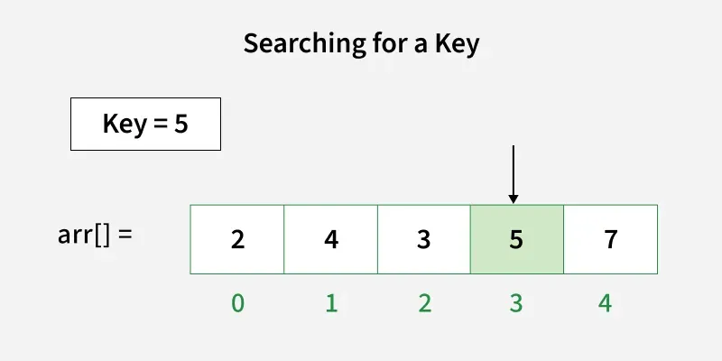
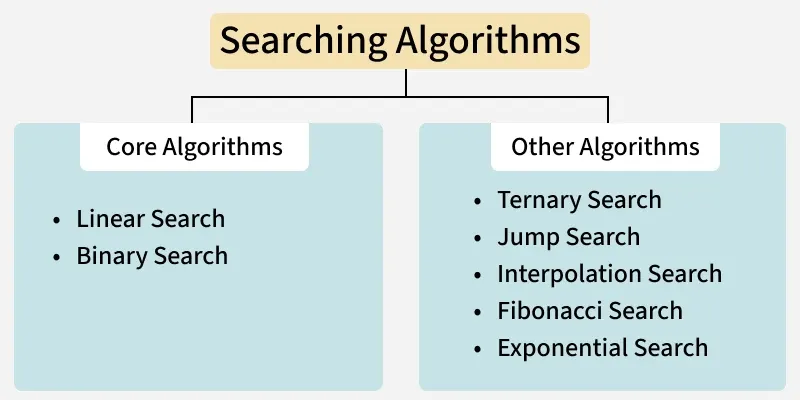
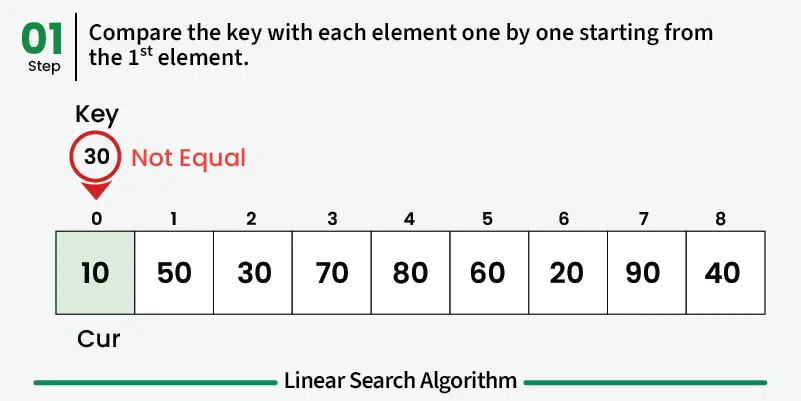
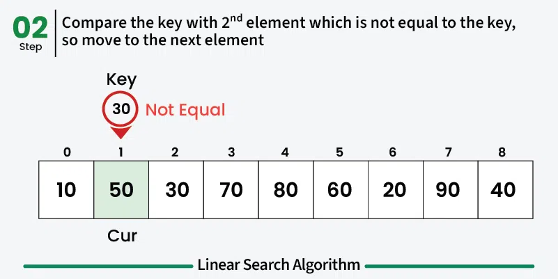
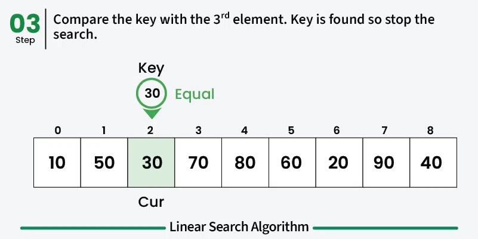
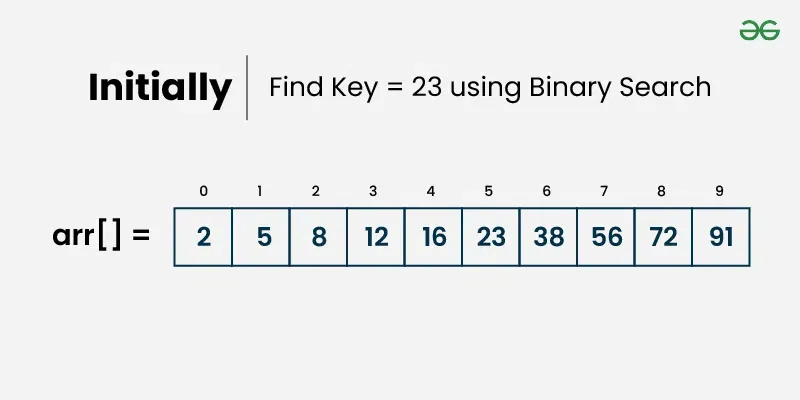
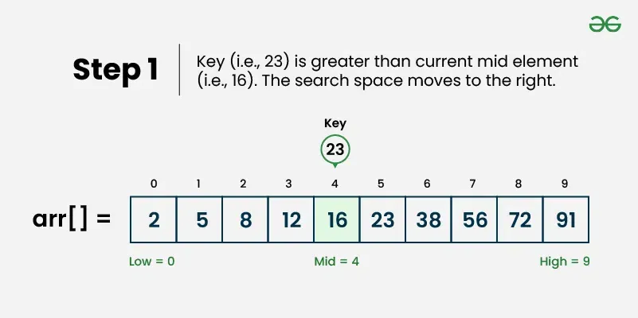
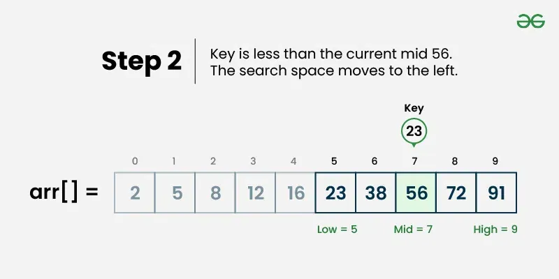
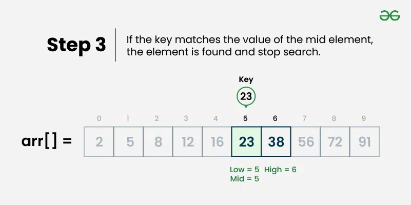

Searching
Searching adalah proses mendasar untuk menemukan elemen atau item tertentu dalam kumpulan data. Kumpulan data ini dapat berupa berbagai bentuk, seperti array, daftar, pohon, atau representasi terstruktur lainnya.
 |
 |
Linear Search
Ini adalah algoritma pencarian paling sederhana yang memeriksa setiap elemen secara berurutan hingga kunci ditemukan atau seluruh koleksi telah dijelajahi. Bekerja pada data yang sudah diurutkan maupun yang belum diurutkan.
Misalnya: Perhatikan array arr[] = {10, 50, 30, 70, 80, 20, 90, 40} dan key = 30
 |
 |
 |
Contoh Code
def search(arr, x):
->n = len(arr)
-># Iterate over the array in order to
-># find the key x
->for i in range(0, n):
-->if (arr[i] == x):
--->return i
->return -1
if __name__ == "__main__":
->arr = [2, 3, 4, 10, 40]
->x = 10
->result = search(arr, x)
->if(result == -1):
-->print("Element is not present in array")
->else:
-->print("Element is present at index", result)
Binary Search
Algoritma ini bekerja pada array yang sudah diurutkan dengan membagi interval pencarian menjadi dua secara berulang. Jika target cocok dengan elemen tengah, kembalikan elemen tersebut; jika tidak, lanjutkan pencarian ke kiri atau ke kanan.
Misalnya: Perhatikan array arr[] = {2, 5, 8, 12, 16, 23, 38, 56, 72, 91} , dan kuncinya = 23 .
 |
 |
 |
 |
Contoh Code
data = [1,2,3,4,6,7,8,9]
def binarysearch(dat,key):
i_awal = 0
i_akhir = len(data)-1
ketemu = False
while i_awal <= i_akhir and not ketemu:
->tengah = (i_awal + i_akhir)//2
->if data[tengah] == key:
->ketemu = True
->else:
->if data[tengah] > key:
-->i_akhir = tengah -1
->else:
-->i_awal = tengah +1
return ketemu
print(binarysearch(data,8))